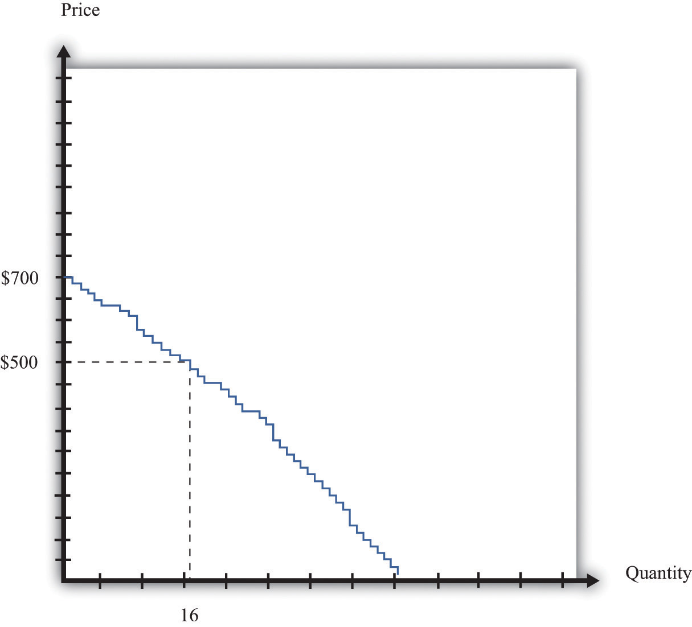
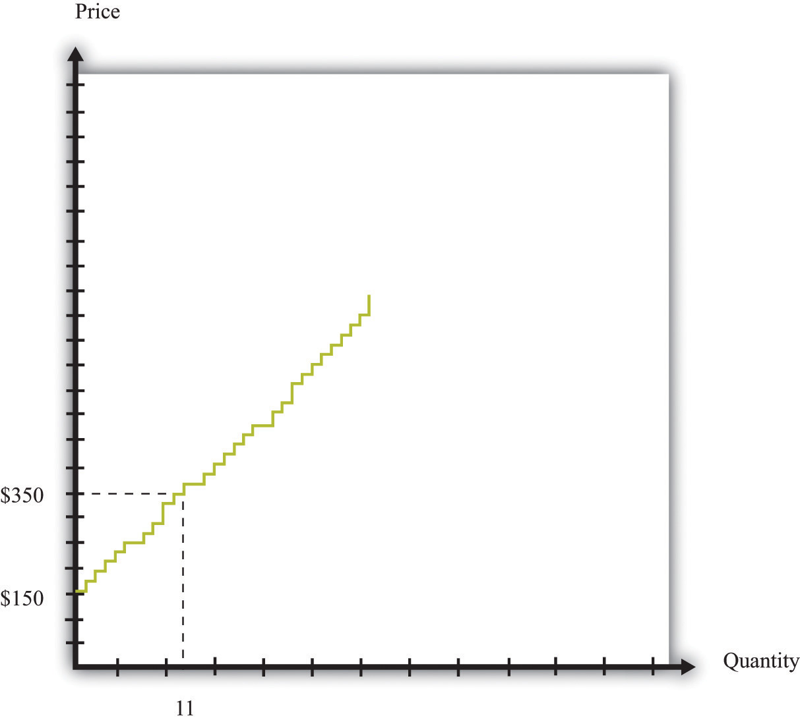
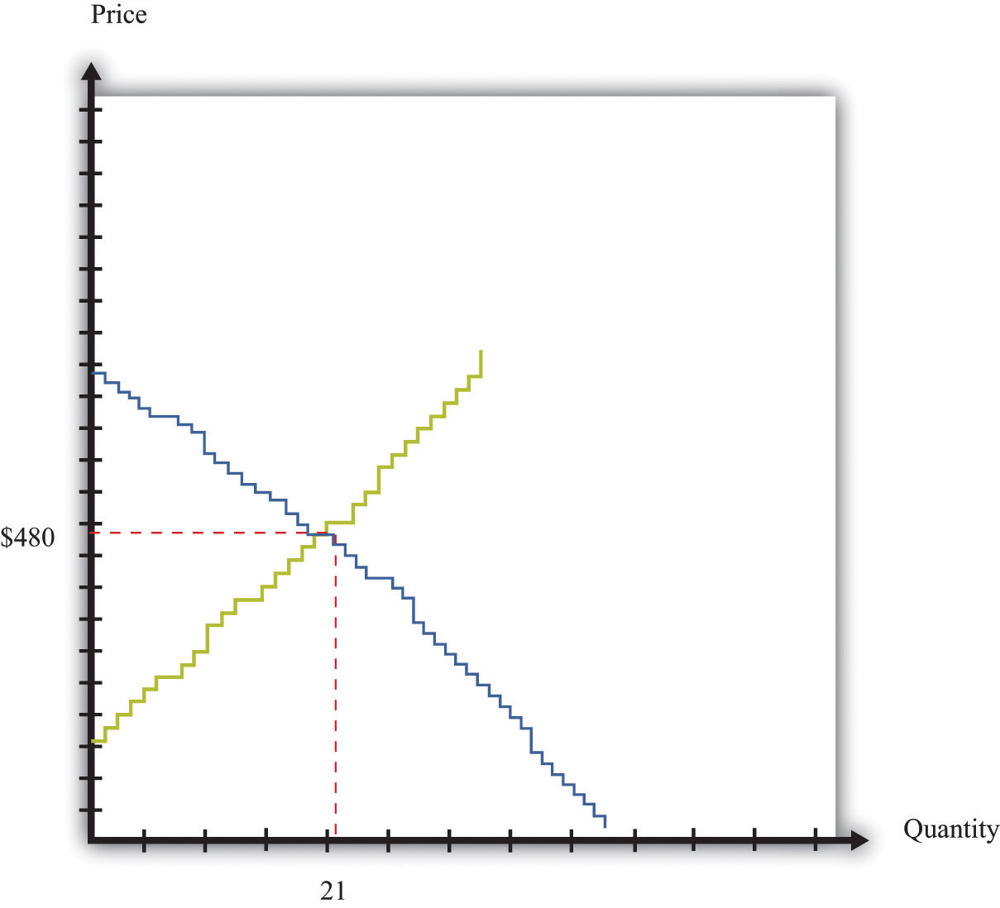
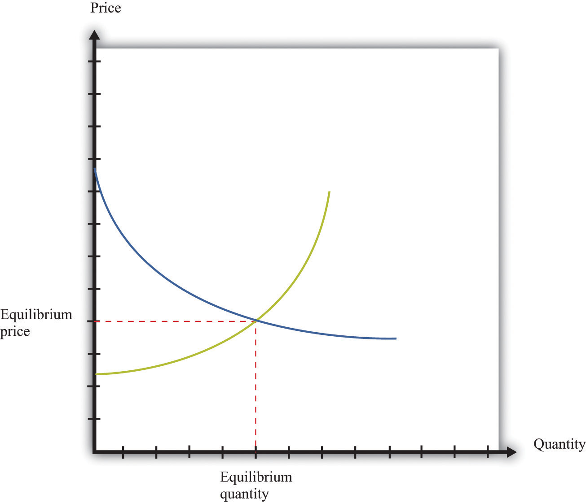
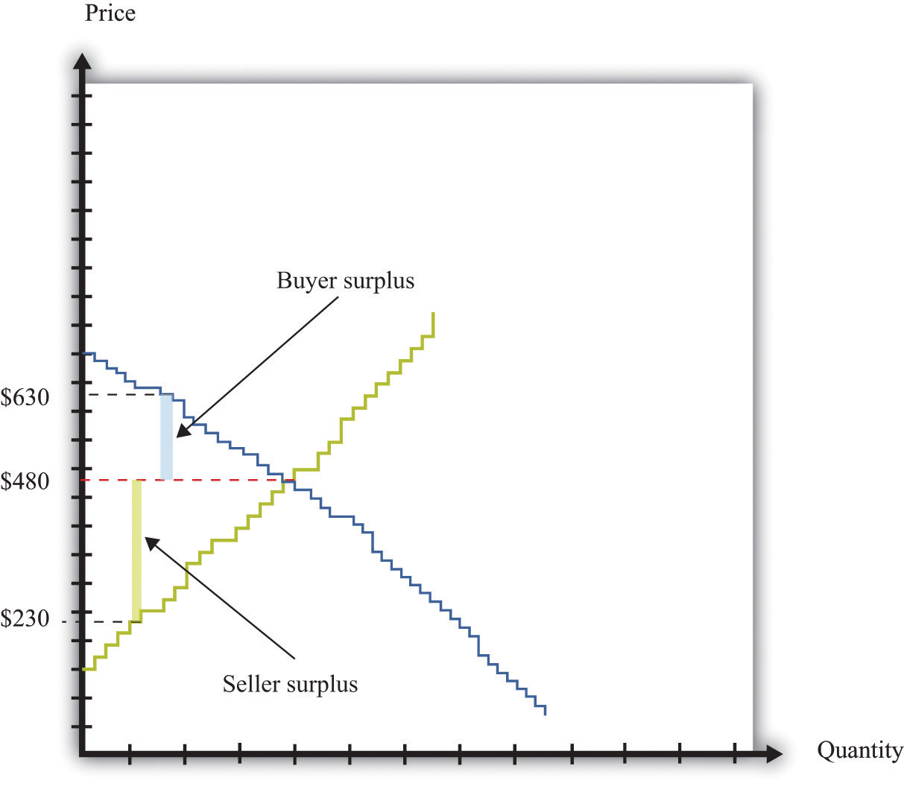
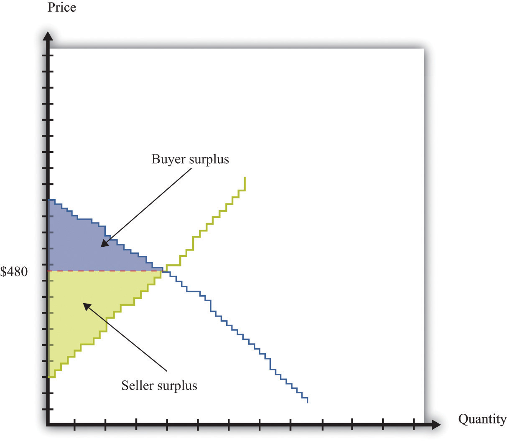

An auction mechanism such as eBay is a natural thing for a seller to use if there are a large number of potential buyers for a good. But what happens if there is also a large number of potential sellers? In this section, we consider what might happen when we have a large number of potential buyers and a large number of potential sellers of a good.
We have already explained that it is very difficult to analyze what would happen on eBay when there are multiple buyers and sellers, but we can make a better guess about what will happen on a site like craigslist. As a buyer, you will look for the lowest price out there, bargain with sellers who post high prices, or both. As a seller, you would look at the prices posted by others and realize that you probably should set your price fairly close to those prices. In addition, we have some evidence that can help us understand the likely outcome in a world of many buyers and many sellers. It comes from looking at “double oral auctions.” “Double” refers to the fact that there are a large number of buyers and sellers. “Oral” refers to the way in which the auction is conducted.
In a double oral auctionA large number of buyers and sellers, each with potentially a different valuation of a good, negotiate with each other, one on one, to try to get a better deal., there is a large number of buyers, each of whom potentially has a different valuation of the good. There is also a large number of sellers, each of whom potentially has a different valuation of the good. Buyers and sellers negotiate with each other, one on one. If they cannot agree to a deal, either party can move on at any time and try to find someone else to bargain with.
Until quite recently, auctions such as this were common in many financial markets and commodity markets. These markets sometimes go by the name pit markets because buyers and sellers meet in a frenzy of activity in a trading area called the pit. Traders can hear and see the negotiations of others and often have access to the prices at which deals have been done. This means that both buyers and sellers have lots of information about what price is prevailing in the market.Chapter 10 "Making and Losing Money on Wall Street" has much more to say about these markets.
Economists have also conducted experiments in which they have put people in simulated pit markets to find out how they behave. The result is quite remarkable, but before we explain what happens, we need a framework to help us think about such markets.
Suppose we are considering the purchase of a gaming console by a group of buyers. Each potential buyer has his own valuation. Some might be willing to pay as much as $700. Others might be willing to spend much less. After all, how much you are willing to pay for a gaming console depends on your income, how much you like playing, what equipment you currently own, and so on.
Each potential buyer has a unit demand curve like the one we saw in Figure 6.3 "The Buyer’s Valuation". We can add these unit demand curves together to get a picture of demand in the entire market: the market demand curveThe number of units of a good or a service demanded at each price.. For example, suppose only one person is willing to buy if the price is $700. However, suppose there is another buyer with a valuation of $660. If consoles were on sale for $660, then both individuals would want to purchase. At $660, in other words, the quantity demanded is 2. Perhaps the buyer with the next-highest valuation is willing to pay $640. If the price is $640, the quantity demanded is 3. Figure 6.10 "Obtaining the Market Demand Curve" shows what happens when we add together all these unit demand curves. The result is a downward sloping relationship that shows us how many units would be demanded at any given price.
Toolkit: Section 31.9 "Supply and Demand"
The market demand curve tells us how many units of a good or a service will be demanded at any given price. The market demand curve is obtained by adding together the individual demand curves in the economy and obeys the law of demand: as the price decreases, the quantity demanded increases.
Figure 6.10 Obtaining the Market Demand Curve
We can add together the unit demand curves of different individuals in the economy to get the market demand curve.
We saw earlier that each potential seller has a unit supply curve. If the price is less than a seller’s valuation, she will not sell the good, but when the price becomes greater than her valuation, she will be willing to sell. Just as we added together the unit demand curves to get the market demand curve, so too can we add together the unit supply curves to get the market supply curveThe number of units of a good or a service supplied at each price..
Toolkit: Section 31.9 "Supply and Demand"
The market supply curve tells us how many units of a good or a service will be supplied at any given price. The market supply curve is obtained by adding together the individual supply curves in the economy and typically slopes upward: as the price increases, the quantity supplied to the market increases.
In Figure 6.11 "Obtaining the Market Supply Curve", we see that the lowest valuation in the market is $150. There is one seller willing to sell a console at that price. As the price increases, more and more sellers will find the price attractive and will want to sell. For example, there are 11 potential sellers with a valuation less than $350. Thus, at this price, 11 consoles will be supplied to the market.
Figure 6.11 Obtaining the Market Supply Curve
We can add together the unit supply curves of different individuals in an economy to get the market supply curve.
Figure 6.10 "Obtaining the Market Demand Curve" and Figure 6.11 "Obtaining the Market Supply Curve" tell us the number of buyers willing to buy and the number of sellers willing to sell at each price.
Figure 6.12 "Market Equilibrium" shows what happens if we combine the demand curve and the supply curve on the same diagram. One point jumps out at us: the place where the demand and supply curves meet. In our example, this is at $480 and a quantity of 21 units. At this point, the number of buyers with a valuation greater than the price is the number of sellers with a valuation less than the price. If buyers and sellers were presented with this price, none would find themselves unable to transact. At this price, there is an exact match between the number of buyers and sellers.
Figure 6.12 Market Equilibrium
In this figure, we combine the demand and supply curves to find the equilibrium price and quantity in the market.
Toolkit: Section 31.9 "Supply and Demand"
Equilibrium in a market refers to an equilibrium price and an equilibrium quantity and has the following features:
EquilibriumThe equilibrium price and the equilibrium quantity in a market. is not only a point on a graph. It is a prediction about a possible outcome in a situation where a large number of buyers and sellers meet with the possibility of trading. It seems plausible that in a situation where a large number of buyers and sellers can meet and trade with each other, most will end up trading at or near the equilibrium priceThe price at which sellers supply the equilibrium quantity and buyers demand the equilibrium quantity..
The equilibrium outcome is plausible because, at any other price, there will be a mismatch of buyers and sellers. Imagine, by contrast, that the buyers and sellers of our example are currently trading at $600, well above the equilibrium price of $480. At this high price, many more people want to sell than want to buy. Buyers would rapidly realize that they are in a strong bargaining position: if many sellers want your business, you can make them compete with each other and force price decreases. In fact, whenever the price is above equilibrium, the mismatch of buyers and sellers will tend to decrease prices.
By similar reasoning, a price of, say, $400 would also result in a mismatch between buyers and sellers. In this case, though, there are more people who want to buy than sell. Sellers can make buyers compete with each other, leading to price increases. At any price below the equilibrium price, prices will tend to increase.
Economists formalize the intuition we have just developed with the most famous framework in all of economics: supply and demand.The definition is repeated and discussed in more detail in Chapter 8 "Why Do Prices Change?"; we make extensive use of it in other chapters.
Toolkit: Section 31.9 "Supply and Demand"
Supply and demand is a framework we use to explain and predict the equilibrium price and quantity of a good. This framework illustrates the willingness to sell (market supply) and buy (market demand) on a graph with price on the vertical axis and units of the good or the service on the horizontal axis. A point on the market supply curve shows the quantity that suppliers are willing to sell for a given price. A point on the market demand curve shows the quantity that demanders are willing to buy for a given price. The intersection of supply and demand determines the equilibrium price and quantity that will prevail in the market. A basic supply-and-demand framework is shown in Figure 6.13 "Supply and Demand".
Figure 6.13 Supply and Demand
When we have a large number of buyers and sellers of an identical good or service, the equilibrium price and quantity are determined by the intersection of the supply and demand curves.
The position of the demand curve depends on many things, such as income and the prices of other goods. A change in any of these will cause the entire demand curve to shift. Likewise, the position of the supply curve depends on factors such as a supplier’s costs. A change in these will cause the entire supply curve to shift. When one (or both) of the curves shifts, the equilibrium price and quantity change.
Experience with double oral auctions, both in the laboratory and in actual pit markets, tells us that trading will typically settle down close to the equilibrium price within a relatively short period of time. In a situation where there is a large number of people buying and selling an identical good, we say that we have a competitive marketA market that satisfies two conditions: (1) there are many buyers and sellers, and (2) the goods the sellers produce are perfect substitutes.. We expect that most trades will take place at or close to the equilibrium price, and the quantity traded will be approximately equal to the equilibrium quantityThe quantity where the supply and demand curves intersect, so the quantity supplied equals the quantity demanded.. In fact, even when the number of participants in the auction is relatively small, we often find that a double oral auction still gets close to this equilibrium price and quantity. This is the remarkable finding that we mentioned earlier: in a double oral auction, the number of transactions and the prices of these transactions are usually very close to the equilibrium predicted by supply and demandA framework that explains and predicts the equilibrium price and equilibrium quantity of a good..
Toolkit: Section 31.9 "Supply and Demand"
Suppose a market has the following two characteristics:
In this case we say that we have a competitive market (sometimes called a perfectly competitive market). Buyers and sellers both take the price as given. This means that they think their actions have no effect on the price in the market, which in turn means we can employ the supply-and-demand framework.
Suppose all the transactions in Figure 6.12 "Market Equilibrium" take place at the equilibrium price of $480. What can we say about the surplus received by buyers and sellers? Each individual transaction looks like those we examined in Chapter 6 "eBay and craigslist", Section 6.2 "eBay". The total surplus from any given transaction is equal to the difference between the buyer’s valuation and the seller’s valuation. The buyer surplusA measure of how much the buyer gains from a transaction, equal to the buyer’s valuation minus the price. is the difference between his valuation and $480. The seller surplusA measure of how much the seller gains from a transaction, equal to the price minus the seller’s valuation. is the difference between the price and her valuation. For example, Figure 6.14 "The Gains from Trade in a Single Transaction in Market Equilibrium" shows the gains from trade if a buyer with a valuation of $630 matches up with a seller whose valuation is $230:
buyer surplus = $630 − $480 = $150, seller surplus = $480 − $230 = $250,and
total surplus = $150 + $250 = $400.The transaction generates $400 worth of surplus: $150 goes to the buyer, and $250 goes to the seller.
Figure 6.14 The Gains from Trade in a Single Transaction in Market Equilibrium
Each transaction in the market generates surplus.
We could draw exactly the same diagram for all 21 transactions in the market. If we combine them, we would end up with Figure 6.15 "Surplus in Equilibrium". The total surplus accruing to the buyers is equal to the area below the demand curve and above the price. The total surplus accruing to the sellers is equal to the area above the supply curve and below the price. The total surplus—that is, the total gains from trade in this market—is the sum of the buyer surplus in the market and the seller surplus in the market. The total surplus is therefore the area between the supply curve and the demand curve.
Figure 6.15 Surplus in Equilibrium
If we add the surplus from all trades in the market, supposing that they all take place at $480, we obtain the total surplus in the market.
If you look at Figure 6.15 "Surplus in Equilibrium", something else may become apparent to you. All the gains from trade have been exhausted in the market. If buyers and sellers trade at the market price, then they manage to achieve all the gains from trade that are possible in this market because
The first statement is true because all trades are voluntary. We can see that the second statement is true by imagining trying to match up another buyer and seller. All the buyers with valuations greater than $480 have now made a purchase. So every remaining potential buyer has a valuation less than $480. All the sellers with valuations less than $480 have now made a sale. So every potential seller has a valuation greater than $480. It follows that there is no mutually beneficial transaction to be carried out.
This is a truly remarkable result. A market where all potential buyers and sellers take as given the equilibrium price allows all the possible gains from trade to be realized. Thus a market is a very effective mechanism for generating an efficient allocation of resources. This is why economists place so much emphasis on markets and “market solutions” to economic problems. Markets allow buyers and sellers to come together to make mutually beneficial trades. Economists believe that, as far as possible, we should create circumstances in which people can meet and carry out voluntary transactions.
Although this argument for markets is very powerful, we must be careful. Buyers and sellers may benefit from trading, but sometimes other people not involved in the transaction may also be affected. For example, suppose you fill up your car with gas at your local gas station. Presumably, you benefit from this transaction—otherwise you wouldn’t have bought the gas. Likewise, the gas station owner benefits from the transaction—otherwise the owner wouldn’t have sold it to you. But your purchase will contribute to smog and air pollution when you drive the car, affecting other people in the vicinity. To the extent that you make a contribution to global climate change, your little transaction has the potential to have an effect—a very tiny effect but an effect nonetheless—on everyone else on the planet. As a more positive example, going to college is presumably a mutually beneficial transaction between you and your school. But many others may eventually benefit from your education as well.In Chapter 14 "Cleaning Up the Air and Using Up the Oil", we consider such uncompensated costs and benefits in detail.